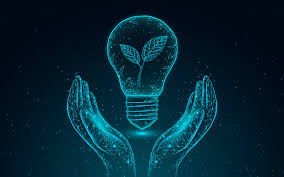
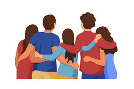

Interests
Sports Enthusiast
Ever since I was little, I always played and later watched national and international games. Locally I support FC Vardar, however I am a big fan of Real Madrid FC.
However, I get the most pleasure when I watch the Macedonian national team

Innovation
Connecting the real life problems with technology may seem irrational to do, however through my experience it is possible.
Having a mobile application that can solve global problems is a great satisfaction for me.

Hanging out
To have meaningful memories is to have great people around you. Then even the biggest challenges seem easy, especially when there is someone to discuss and share them with
